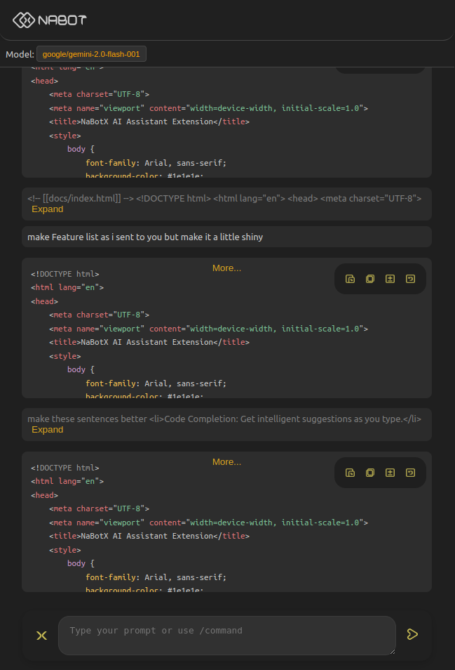

NaBotX
Welcome to the NaBotX AI Assistant Extension documentation.
Features
-
Flexible LLM Selection: Choose between local or global Language
Model options.
-
Granular Control: Manage and control the data sent to the Language
Model.
-
Accelerated Prototyping: Quickly bring your ideas to life with rapid
prototyping capabilities.
